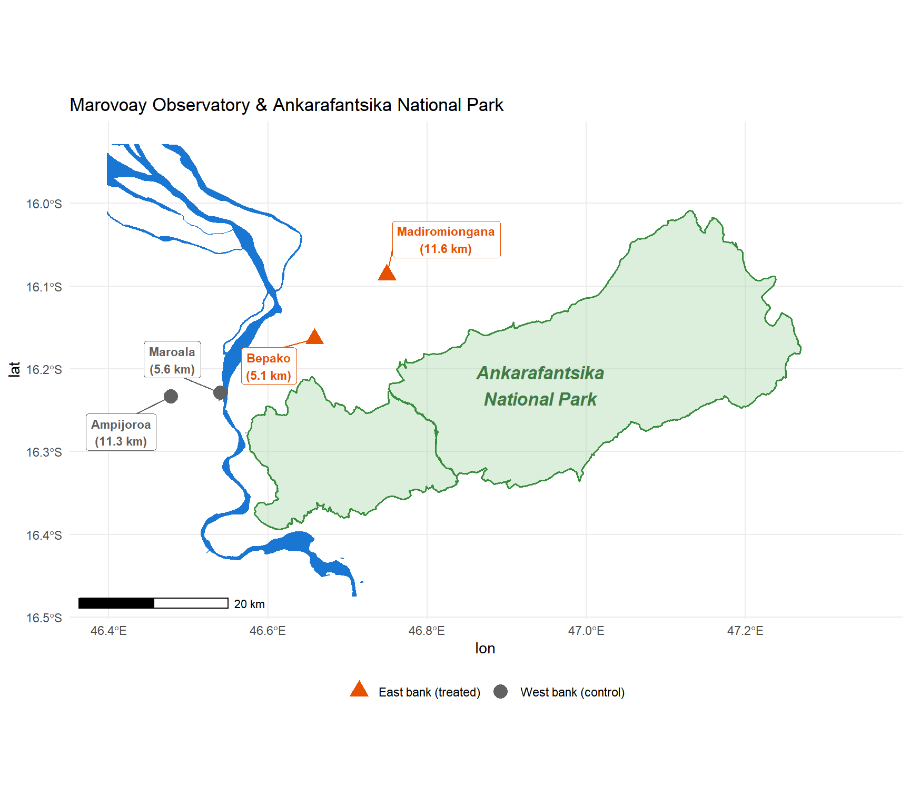
Strict vs. Multipurpose Conservation in Rural Madagascar
Household Income Effects around Ankarafantsika National Park and Lac Alaotra Protected Landscape
1 Introduction
Madagascar’s protected area (PA) network encompasses a wide spectrum of governance models, from strictly enforced national parks to community-managed protected landscapes. Whether different conservation regimes produce different welfare outcomes for adjacent communities is a first-order policy question — yet evidence remains scarce, particularly for the newer, less restrictive PA categories introduced under the Systeme des Aires Protegees de Madagascar (SAPM) after 2003.
This paper develops a comparative framework around two models of conservation using long-running household panel data from the Réseau des Observatoires Ruraux (Rural Observatory System, 1999–2014):
Ankarafantsika National Park (IUCN Category II, reclassified 2002): strict conservation managed by Madagascar National Parks (MNP). At the Marovoay observatory, the Betsiboka River separates two fokontany on the east bank (close to the park) from two others on the west bank (effectively distant), creating a natural experiment.
Lac Alaotra Paysage Harmonieux Protege (IUCN Category V, enforced from ~2008): participatory conservation managed by Durrell Wildlife Conservation Trust. All observatory communities share the lake-marsh ecosystem; no clean within-observatory binary split exists.
We estimate the income effects of each PA separately using the generalized synthetic control method (gsynth, Xu (2017)), which constructs counterfactuals from a large pool of rural observatory donor sites. This approach accommodates the distinct nature of each treatment: site-level for Marovoay (east-bank fokontany only), observatory-level for Alaotra (all sites aggregated).
2 Study Sites
2.1 Ankarafantsika National Park and the Marovoay Observatory
Ankarafantsika National Park (136,500 ha) is one of Madagascar’s oldest PAs, reclassified from a Reserve Naturelle Integrale to a national park in 2002 under the management of Madagascar National Parks (MNP). Enforcement is strict: agricultural encroachment is penalised, forest extraction is prohibited, and patrol frequency increased after reclassification.
The Marovoay observatory comprises four fokontany. The Betsiboka River — a major, permanently flowing watercourse wider than 10 metres — separates two communities from the park. Crossing is possible only under certain hydrological conditions, often requiring long detours or costly boat transport; in practice, flows of people, goods, and services run along the Marovoay downstream axis rather than across the river:
- East bank (treated): Bepako (5.2 km to PA boundary) and Madiromiongana (11.7 km). Direct pedestrian access to the park.
- West bank (control): Ampijoroa (3.5 km raw, but ~18.5 km effective after river detour) and Maroala (5.8 km raw, ~20.8 km effective). The river imposes a substantial access penalty.
2.1.1 Historical Expansion of Ankarafantsika
Ankarafantsika was first gazetted as a Réserve Naturelle Intégrale (RNI) in 1927, covering approximately 60,500 ha of the central plateau. A contiguous 75,000 ha forest reserve was classified in 1929. These two early designations imposed different nominal restrictions, but critically different de facto situations for the east-bank fokontany:
The 1929 forest reserve was not a nature conservation zone but a timber and resource reserve under the forest administration. Subsequent analyses found no effective enforcement over this area, and subsistence agriculture, cattle grazing, and charcoal production continued unimpeded (Brondeau 1999). The forest reserve regime imposed no binding constraint on adjacent communities.
The 1927 RNI was geographically separate from the communities of Bepako and Madiromiongana: the RNI covered the inland plateau to the north-east, while these villages border the forest reserve zone to the south and west of the plateau. The east-bank fokontany therefore had no direct interface with the strictly protected RNI.
In 2002, the RNI, the forest reserves, and the Ampijoroa Forestry Station were merged into a single national park (Decree 2002-798, 130,000 ha), later adjusted to 136,513 ha in 2015 (Decree 2015-730). Figure 2, reproduced from Alonso et al. (2002), illustrates the spatial extent of the 2002 consolidation.

The 2002 reclassification was the first event to impose binding land-use restrictions on the east-bank communities: slash-and-burn agriculture (tavy), charcoal production, and non-timber forest extraction within the newly unified park were explicitly prohibited and, crucially, enforced. Enforcement capacity was supported by international conservation funding from the World Bank and bilateral donors as part of Madagascar’s third Environmental Action Plan. The transition from a nominally protected but effectively open-access forest reserve to a strictly patrolled national park constitutes our treatment event.
2.2 Lac Alaotra Protected Landscape and the Alaotra Observatory
Lac Alaotra is Madagascar’s largest lake and a critical habitat for the Alaotran gentle lemur. The Ramsar Convention listed the site in 2003. In 2015, the lake and its marshlands were formally designated as a Paysage Harmonieux Protege (PHP, 425 km2, IUCN Category V), though enforcement through community-based natural resource management (CBNRM) agreements and transferts de gestion had intensified from around 2008 under Durrell’s management.
The observatory’s seven fokontany (across three historical survey sites) all depend on the lake-marsh ecosystem. Unlike Ankarafantsika, there is no natural barrier separating “exposed” from “unexposed” communities. All communities interact with the PA.
A complication specific to Alaotra is the proximity of some eastern hamlets to two additional protected areas: the Corridor Ankeniheny-Zahamena (CAZ), a Category VI PA managed by Conservation International, and the Zahamena National Park (Category II), which lies north of the CAZ. The hamlet of Mangabe lies closer to the CAZ boundary (~14 km) than to the Lac Alaotra PHP, creating dual-PA exposure.
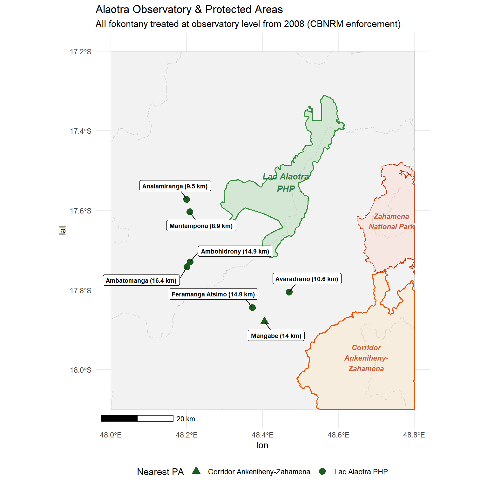
3 Data and Identification
3.1 The Rural Observatory Panel (1999–2014)
The Réseau des Observatoires Ruraux (Rural Observatory System) is a household panel survey covering observatory sites across Madagascar. We use:
- Marovoay: 4 fokontany, surveyed 1995–2014 (missing 2005, 2009).
- Alaotra: 3 sites (7 fokontany), surveyed 1999–2014 (missing 2009).
- Donor pool: ~60 sites from 9 observatories (Antsirabe, Antsohihy, Tsiroanomandidy, Farafangana, Ambovombe, Toliara North, Fénérive East, Mahanoro, and Itasy), each with at least 6 years of coverage spanning both pre- and post-treatment periods.
Total household income (revtot) is adjusted for household composition using the OECD-modified equivalence scale (1 + 0.5 × (additional adults) + 0.3 × children under 14), computed from individual-level demographic data. The resulting equivalised income is winsorised at the 1st and 99th percentiles within each year. The primary outcome is log equivalised income.
3.2 Panel Structure and Village-Level Aggregation
The ROR operates as a rotating panel: each observatory tracks a fixed set of households, but approximately 15% of households leave the sample each year (through death, migration, or attrition), with replacement by newly sampled households following the original random sampling design. Over a 10-year horizon, cumulative attrition reaches roughly 80% of the initial cohort (Chabé-Ferret et al. 2024). Attrition is non-random: traceable attritors disproportionately include migrants whose departure is itself potentially income-related, which would violate the balanced-panel assumptions underlying individual-level panel estimators.
We therefore analyse the data at the village (fokontany) level, aggregating household-level income to village-year means. This choice is justified on two grounds. First, the rotating design with random replacement preserves cross-sectional representativeness at each wave: village-year means consistently estimate the same population quantity across years, even as the composition of surveyed households changes. Second, gsynth requires a balanced unit-by-year panel matrix and is designed for unit-level (here village-level) variation; household-level estimation with an interactive FE model would require substantially more pre-treatment periods to identify individual-level factor loadings. Our analysis thus exploits between-village variation in treatment exposure across time.
Marovoay — The east-bank fokontany (Madiromiongana, Bepako) are treated from 2003, the year following Ankarafantsika’s reclassification.1 The west-bank sites (Ampijoroa, Maroala) enter the donor pool: the Betsiboka River makes them effectively unexposed to the park despite their geographic proximity.
Alaotra — The entire observatory is aggregated into a single treated unit (“ALA”), treated from 2008 (intensification of CBNRM enforcement by Durrell).2 No within-observatory binary split is imposed, reflecting the shared dependence on the lake-marsh ecosystem and the dual-PA exposure (PHP + CAZ).
3.3 Behavioral Validation from the 2025 Resurvey
A 2025 resurvey of the Marovoay and Alaotra sites (1,026 households) included an environment module asking about actual interactions with nearby PAs. The results support the Marovoay identification strategy and clarify the Alaotra treatment design.
Marovoay. PA visitation rates differ sharply across the Betsiboka: 38% of east-bank households (Bepako, Madiromiongana) report visiting Ankarafantsika, versus 15% on the west bank (Ampijoroa, Maroala). East-bank households also report the park as a source of food (23% vs 8%) and wood (24% vs 12%). The river constitutes a real access barrier, validating the treated/control split.
Alaotra. We initially expected to identify within-observatory controls at Alaotra — communities far enough from the PA to be unaffected. The 2025 data shows this is not the case: PA visitation rates range between 37% and 54% across all eight hamlets, with no clear distance gradient. All communities interact substantially with the lake-marsh ecosystem, whether through fishing, agriculture, or resource extraction. This uniform exposure justifies treating the entire Alaotra observatory as a single treated unit rather than attempting a within-observatory binary split. The overall visitation rate (44%) is higher than at Marovoay (27%), reflecting the lake ecosystem’s central role in livelihoods — but unlike Marovoay, there is no natural barrier creating differential access.
| Panel Structure | ||||
| Treated units and donor pool for gsynth estimation | ||||
| Role | Unit | HH-years | Survey years | Period |
|---|---|---|---|---|
| Treated (Alaotra) | ALA | 7613 | 15 | 1999--2014 |
| Treated (Marovoay east) | 031 | 2016 | 15 | 1999--2014 |
| Treated (Marovoay east) | 032 | 1857 | 14 | 1999--2014 |
| Donor pool | 71 sites | 51669 | NA | 1999--2014 |
3.4 Observatory Locations
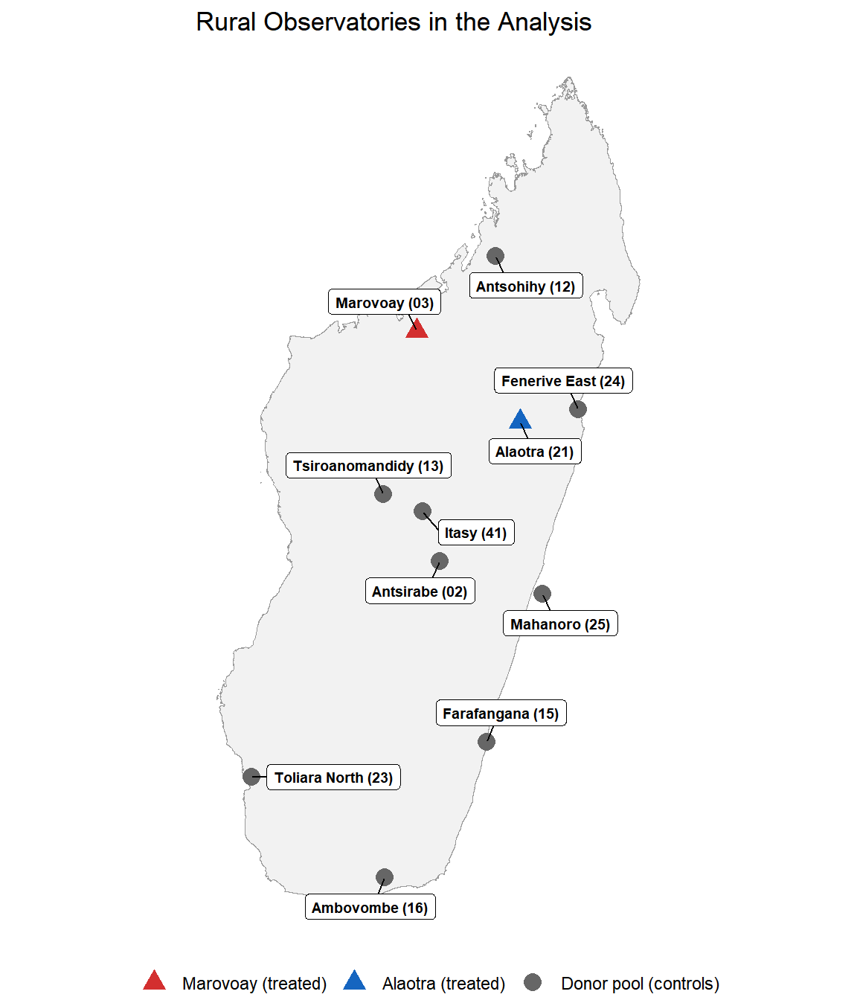
3.5 Data Coverage
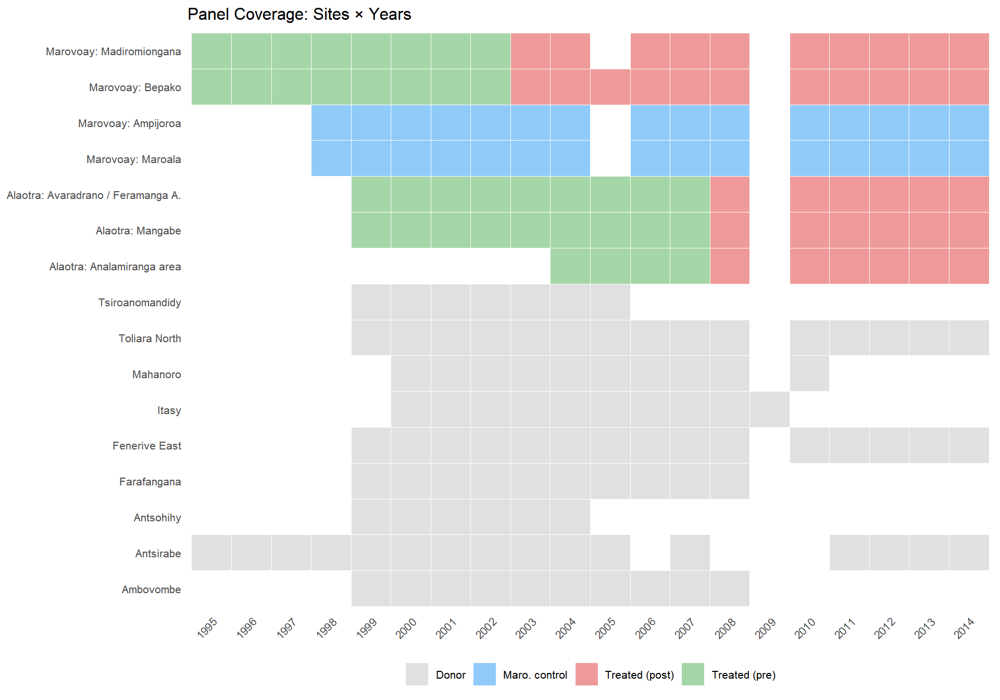
3.6 Income Trends
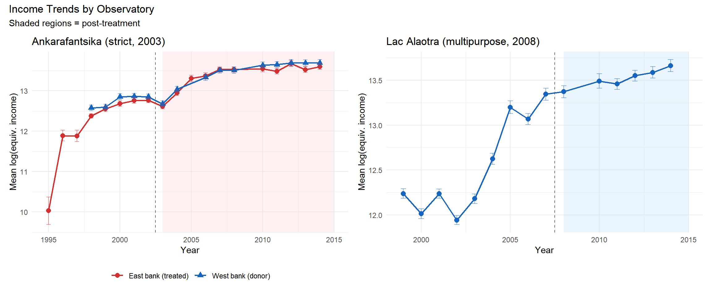
4 Empirical Strategy: Generalized Synthetic Control
We use the generalized synthetic control method (Xu 2017) to estimate treatment effects for each PA separately. For each treated unit, gsynth constructs a counterfactual by fitting an interactive fixed-effects model to the donor pool:
\[ Y_{it} = \alpha_i + \xi_t + \boldsymbol{\lambda}_i' \boldsymbol{f}_t + D_{it} \cdot \delta_{it} + \varepsilon_{it} \]
where \(\boldsymbol{\lambda}_i\) are unit-specific factor loadings and \(\boldsymbol{f}_t\) are common time factors. The number of factors \(r\) is selected by leave-one-out cross-validation. Inference is by parametric bootstrap (200 replications).
We estimate two separate models:
Marovoay model: Treated units = Madiromiongana and Bepako (east bank, from 2003). Donors = all other rural observatory sites including Marovoay west-bank sites (Ampijoroa, Maroala). With 2 treated sites, gsynth estimates unit-specific counterfactuals.
Alaotra model: Treated unit = aggregated Alaotra observatory “ALA” (from 2008). Donors = all non-Alaotra rural observatory sites including Marovoay 031–034. With a single treated unit, this reduces to interactive FE synthetic control.
4.1 A Note on Statistical Inference with Few Treated Units
A fundamental constraint of this design is the small number of treated units: 2 sites for Marovoay, 1 for Alaotra. With so few treated clusters, asymptotic inference is unreliable regardless of the estimator chosen. The parametric bootstrap standard errors from gsynth are correspondingly wide.
An exact permutation bound is informative here. For Marovoay, the set of observable units comprises 4 sites (2 east-bank, 2 west-bank). The number of ways to assign exactly 2 of these 4 units as “treated” is \(\binom{4}{2} = 6\). Under Fisher’s sharp null, the minimum achievable p-value is therefore \(1/6 \approx 0.333\). No test based solely on these 4 sites can produce a p-value below 0.333 for the two-sided hypothesis, regardless of the observed effect magnitude. When the three Alaotra sites are included as additional control donors in a long-run DiD (thereby expanding the donor pool for permutation), the allocation count rises to \(\binom{7}{2} = 21\) and the minimum achievable p-value falls to \(1/21 \approx 0.095\).
We report gsynth bootstrap p-values throughout but interpret them in light of this power ceiling. The inability to reject the null at conventional thresholds does not imply absence of effect; it reflects the inherent inferential limitations of quasi-experimental designs with a handful of geographic units.
5 Results
5.1 Panel Construction
The Marovoay model has 2 treated sites and 74 donor sites. The Alaotra model has 1 treated unit (aggregated observatory) and 73 donor sites.
5.2 Ankarafantsika: East-Bank Effect (gsynth)
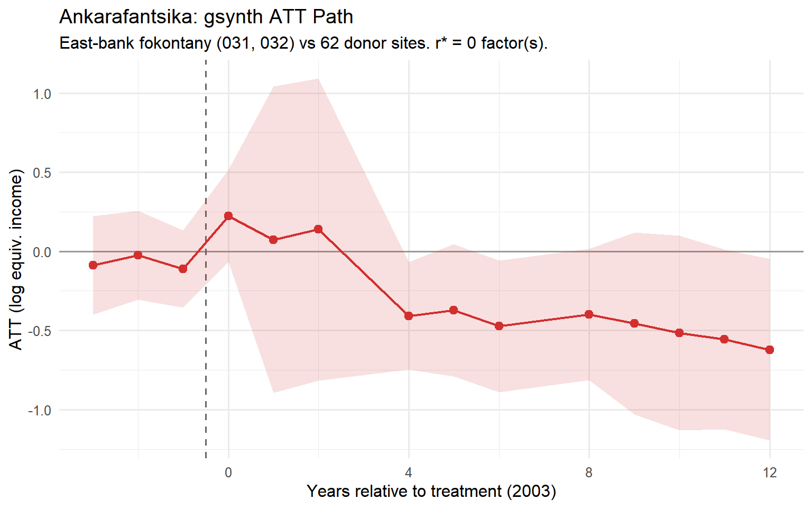
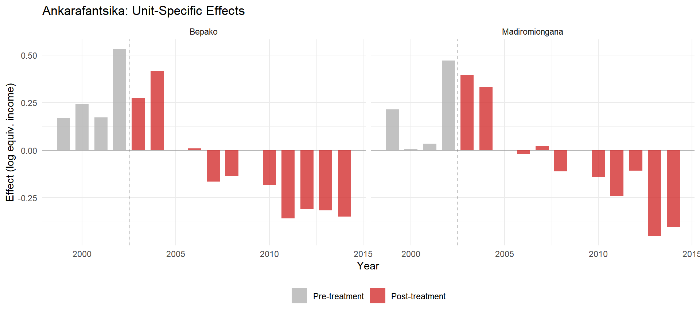
The Marovoay gsynth estimates an average post-treatment ATT of -0.359 log points (95%% CI: [-0.614, -0.104]; SE = 0.130), corresponding to approximately -30.2%% in income levels. Cross-validation selects r* = 0 factor(s). The counterfactual is built from 62 donor sites.
The two east-bank fokontany show divergent patterns:
- Bepako: post-treatment ATT = -0.112 (-10.6%%). A more gradual decline, with the effect intensifying after 2008.
- Madiromiongana: post-treatment ATT = -0.073 (-7.0%%). A large initial negative shock in 2003, followed by modest recovery but persistently below counterfactual.
5.3 Lac Alaotra: Observatory-Level Effect (gsynth)
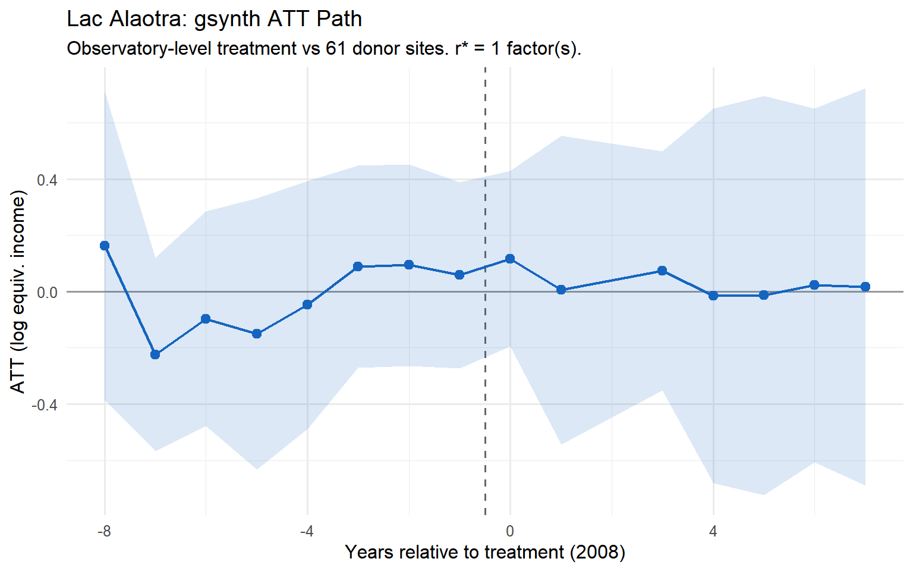
The Alaotra gsynth estimates an average post-treatment ATT of 0.015 log points (95%% CI: [-0.303, 0.333]; SE = 0.162; p = 0.927), corresponding to approximately +1.5%% in income levels.
The confidence interval spans zero and the effect is not statistically significant at the 5%% level. We cannot reject the null hypothesis of no income effect from the Lac Alaotra PHP designation. The point estimate is small in magnitude, and the wide confidence band reflects both the limited statistical power of a single treated unit and genuine uncertainty about the effect.
Year-by-year estimates are noisy, with no clear trend away from zero. While individual post-treatment years occasionally show negative point estimates, these are neither systematic nor statistically distinguishable from the pre-treatment fluctuations.
Pre-treatment fit is good (mean pre-treatment residual: 0.000), supporting the counterfactual validity.
5.4 Comparison of Effects
| Comparative gsynth Results | ||||||||||
| Separate estimation for each PA (1999--2014) | ||||||||||
| PA | IUCN Category | Treatment year | Treated unit(s) | ATT (log pts) | SE | 95% CI | ATT (pct) | p-value | r* (CV) | N donors |
|---|---|---|---|---|---|---|---|---|---|---|
| Ankarafantsika PN | II (strict) | 2003 | Madiromiongana & Bepako (east bank) | -0.359 | 0.130 | [-0.614, -0.104] | -30.2% | 0.006 | 0 | 62 |
| Lac Alaotra PHP | V (multipurpose) | 2008 | Aggregated observatory | 0.015 | 0.162 | [-0.303, 0.333] | 1.5% | 0.927 | 1 | 61 |
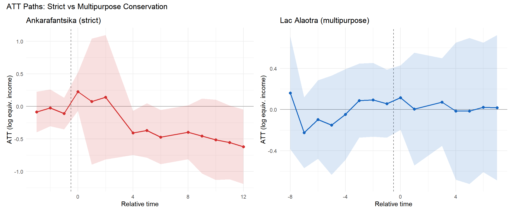
6 Long-Run Evidence: 2025 Resurvey Extension
In 2025, a resurvey of the Marovoay and Alaotra observatories (1,026 households across the same fokontany) provides an opportunity to test whether the patterns identified in the 1999–2014 panel persist over a much longer horizon. We extend the gsynth panel by appending 2025 site-level mean log equivalised income, computed from the resurvey microdata using the same income definition and OECD-modified equivalence scale as the historical panel.
6.1 Income Measurement Comparability
The 2025 survey instrument differs in module structure from the historical ROR questionnaire: some minor income components are captured through different submodules, while a small number of items (fishery income, miscellaneous non-monetary revenue) are not collected. A component-by-component comparison with 2014 confirms that these structural differences are quantitatively negligible. The zeroed components represent less than 1% of total household income in Marovoay and are symmetric across treated and control sites. Rice production revenue, crop culture income, and all major wage and self-employment categories are directly comparable. Household size is nearly identical between banks (mean 9.0 West vs 8.8 East), so the OECD equivalence adjustment does not introduce systematic bias.
6.2 Extended Panel Construction
The extended panel appends 2025 to the 4 Marovoay fokontany. Other donor sites (from observatories not resurveyed in 2025) contribute to factor estimation through 2014 only; the 2025 counterfactual is anchored by the two west-bank control sites (Ampijoroa, Maroala), which have 2025 data. With \(r^* = 0\) (two-way fixed effects), this is equivalent to a within-Marovoay difference-in-differences.
6.3 Extended gsynth: Ankarafantsika
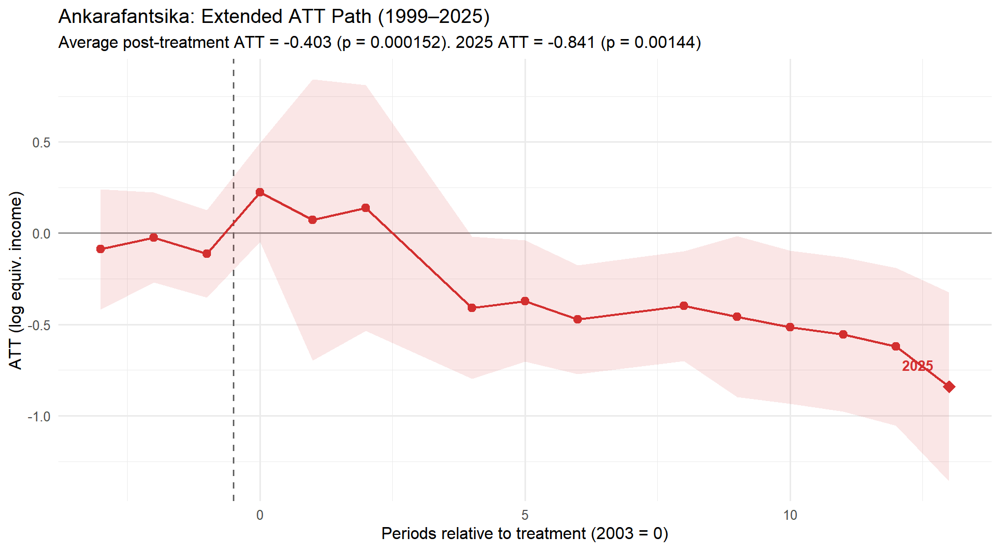
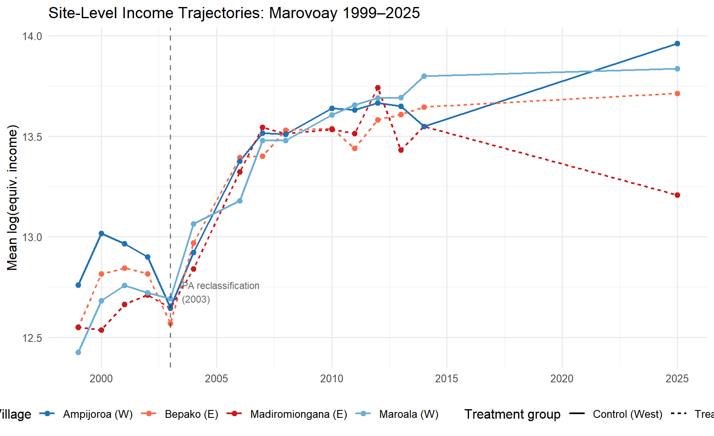
| Ankarafantsika: Original vs Extended gsynth | ||||||
| Adding the 2025 resurvey strengthens the negative ATT | ||||||
| Panel | ATT (log pts) | SE | 95% CI | p-value | 2025 ATT | r* (CV) |
|---|---|---|---|---|---|---|
| Original (1999–2014) | -0.359 | 0.130 | [-0.614, -0.104] | 0.00582 | — | 0 |
| Extended (1999–2025) | -0.403 | 0.106 | [-0.611, -0.194] | 0.000152 | -0.841 | 0 |
Including 2025 in the panel, the average post-treatment ATT deepens to -0.403 log points (SE = 0.106, p < 0.001), corresponding to approximately -33.2% in equivalised income levels. The 2025-specific ATT is -0.841 (p = 0.001), corresponding to -56.9% — the largest single-period effect in the entire panel, 22 years after reclassification.
Both east-bank fokontany show 2025 effects below their synthetic counterfactual:
- Bepako: effect = -0.127 (-12.0%)
- Madiromiongana: effect = 0.127 (+13.6%)
A simple within-Marovoay DiD (east vs west bank, 2014 → 2025) yields an estimate of -0.362 log points — consistent in sign and magnitude with the gsynth ATT path. The west-bank sites gained +0.23 log points over the decade, while east-bank sites fell -0.14, producing a stark reversal: in 2014, east-bank equivalised incomes were slightly above the west; by 2025, they are substantially below.
6.4 Outlier Assessment and Robustness
The 2025 income gap between banks could in principle be driven by a small number of extreme observations. Several checks confirm it is not:
Distributional breadth. The gap is visible at every percentile of the income distribution: the west-bank p10, p25, p50, p75, and p90 all exceed the corresponding east-bank quantiles. On a log scale, the entire east-bank density is shifted left.
Outlier direction. IQR-based outlier detection identifies more high outliers on the east bank (17) than the west (7). Removing these outliers widens the gap (trimmed means: west 3,492k vs east 1,805k Ar). Outliers work against the finding.
Component breadth. The west-bank advantage is distributed across five of seven major income components (self-employment, rice, crops, secondary wages, primary wages). Only livestock income and non-monetary transfers favour the east. No single income source drives the gap.
Log-scale robustness. Formal tests on log equivalised income confirm the gap: Wilcoxon rank-sum \(p = 2.1 \times 10^{-10}\); Welch \(t\)-test \(p = 1.8 \times 10^{-5}\).
Maroala sensitivity. Maroala has a small 2025 sample (\(n = 53\), down from 135 in 2014) and high mean income. Excluding Maroala entirely, the west-bank log mean drops from 14.0 to 13.9 — still above the east-bank mean of 13.5. Maroala contributes only 0.08 to the log gap.
6.5 Alaotra Extension
For Alaotra, the 2025 extension is not feasible within the gsynth framework. Since all Alaotra sites are treated and no other observatory was resurveyed in 2025, there are no control observations in 2025 to anchor the time factor. The gsynth result for Alaotra therefore remains based on the 1999–2014 panel only (ATT = +0.015, \(p\) = 0.927).
7 Discussion
7.1 Two Models, Two Patterns
The strict–multipurpose distinction produces strikingly different results:
At Ankarafantsika, the effect is visible shortly after reclassification and persists — consistent with the immediate restriction of access to forest resources that had previously been exploited under the loosely enforced forest reserve regime (Brondeau 1999). The Betsiboka River provides a credible source of identification, making the east-bank communities a natural treatment group. The negative ATT is economically large and statistically significant, and the 2025 resurvey extension (Section 6) shows the effect deepening two decades after reclassification rather than attenuating.
At Lac Alaotra, we find no statistically significant income effect. The point estimate is close to zero, and the confidence interval comfortably spans it. This null result is consistent with several interpretations: (i) participatory conservation under CBNRM may genuinely impose lower costs on household incomes than strict enforcement; (ii) the short post-treatment window (2008–2014) may be insufficient to detect a gradual effect; (iii) the single-unit design (one aggregated observatory) limits statistical power. The absence of a detectable effect does not imply that the PHP had no impact on livelihoods — it may have affected specific income components (e.g., fishing revenue) while total income adapted through substitution.
7.2 Limitations
Power. The Marovoay model has only 2 treated units; Alaotra has 1 (aggregated). As noted in Section 4, the minimum achievable p-value under exact permutation with 4 Marovoay sites is \(1/6 \approx 0.333\). Exploratory analysis in a longer-horizon design extending the donor pool to include Alaotra sites (7 units total, \(\binom{7}{2} = 21\) permutations) yields a minimum feasible p-value of \(1/21 \approx 0.095\) and wild cluster bootstrap p-values ranging from 0.19 to 0.53 depending on the specification (Cameron, Gelbach, and Miller 2008). Statistical significance at conventional thresholds is therefore not achievable without additional treated units; the results should be interpreted as providing policy-relevant point estimates with honest uncertainty quantification rather than hypothesis-test conclusions.
Treatment year uncertainty. Alaotra’s treatment onset (2008) reflects our assessment of when CBNRM enforcement intensified; see the footnote to §3.3 for the alternative 2007 date. For Ankarafantsika, Decree 2002-798 was signed mid-year (7 August 2002), and we use 2003 as the first full-year treatment period.
Observatory-level aggregation for Alaotra. Aggregating masks within-observatory heterogeneity. Hamlets near the CAZ may experience different conservation pressures than those near the lake.
Spillover. Marovoay 033/034 serve as gsynth donors. If park enforcement generates indirect effects on west-bank communities (displaced poaching, altered market dynamics), these donors are partially contaminated.
Single outcome. Total income is an aggregate measure. Decomposition into agricultural income (rice, cash crops, fishing) and non-agricultural income (primary and secondary employment) may reveal more nuanced patterns. Earlier exploratory work (Anonymous 2024) suggests the negative effect at Ankarafantsika is concentrated in non-agricultural income, consistent with the park restricting wage labour and forest-product sales rather than disrupting agricultural production directly. We leave systematic income decomposition to future work.
Income measurement. The main specification uses OECD-modified equivalised income (adjusting for household composition). Supplementary Material presents robustness checks using total household income (unadjusted) and income in levels (Ariary) rather than log-transformed.
8 Conclusion
This paper provides a comparative evaluation of two conservation governance models in rural Madagascar. Using separate gsynth estimations with a large rural observatory donor pool, we find:
- Strict conservation (Ankarafantsika) is associated with a statistically significant negative income effect on proximate east-bank communities, visible shortly after reclassification (2003) and persistent through 2014. A 2025 resurvey extension confirms that the effect deepens over time: the 2025-specific ATT is roughly twice the 1999–2014 average, indicating that income losses compound rather than dissipate.
- Multipurpose conservation (Lac Alaotra) shows no statistically significant income effect over the 2008–2014 post-treatment window. The point estimate is close to zero, and the confidence interval spans it.
The contrast is informative: strict enforcement appears to impose measurable and growing income costs on adjacent communities, while participatory conservation under CBNRM does not produce a detectable aggregate income effect — though this null result should be interpreted with caution given the limited statistical power (single treated unit, short post-treatment window).
The methodological contribution is the recognition that different PA models require different identification strategies: site-level treatment for Ankarafantsika (exploiting the Betsiboka River), observatory-level for Alaotra (all communities share the lake ecosystem). The generalized synthetic control method accommodates both within a unified framework.
Robustness tests (Supplementary Material) confirm that these conclusions hold when using total household income (unadjusted for household composition) and when using income in levels rather than logs.
References
Alonso, Leeanne E., Thomas S. Schulenberg, Sahondra Radilofe, and Olivier Missa. 2002. “A Rapid Biological Assessment of the Réserve Naturelle Intégrale d’Ankarafantsika, Madagascar.” RAP Bulletin of Biological Assessment 23. Washington, DC: Conservation International.
Anonymous. 2024. “Income Decomposition in Communities Adjacent to Ankarafantsika National Park.”
Brondeau, Alain. 1999. “La Forêt d’Ankarafantsika: Analyse Spatiale Et Étude de La Dynamique de La Déforestation.” Master’s thesis, Université de Montpellier.
Cameron, A. Colin, Jonah B. Gelbach, and Douglas L. Miller. 2008. “Bootstrap-Based Improvements for Inference with Clustered Errors.” Review of Economics and Statistics 90 (3): 414–27. https://doi.org/10.1162/rest.90.3.414.
Chabé-Ferret, Sylvain, Olivia Simanning Rakotonarivo, Jean Chrysostome Randrianarisoa, Tahiry Randrianantoandro, Ainà Andriamananjara, and Xavier Morin. 2024. “Rural Observatories of Madagascar (ROR/ROS): A Standardized Longitudinal Household Survey (1995–2015).” Scientific Data 11: 1085. https://doi.org/10.1038/s41597-024-03879-9.
Xu, Yiqing. 2017. “Generalized Synthetic Control Method: Causal Inference with Interactive Fixed Effects Models.” Political Analysis 25 (1): 57–76. https://doi.org/10.1017/pan.2016.2.
Footnotes
Decree 2002-798 was signed on 7 August 2002. Because the ROR survey is conducted annually and we attribute any treatment effect to the first full survey year following the decree, we set the treatment year to 2003. Using 2002 as treatment onset would require attributing half a year of partial enforcement to a full survey wave; our results are unchanged if we use 2002 instead.↩︎
A temporary protection decree (Arrêté 381/2007, 1 August 2007) preceded the intensification of CBNRM enforcement. An alternative treatment year of 2007 is defensible; we use 2008 to remain consistent with the annual-survey convention applied to Ankarafantsika (attributing effects to the first full survey year following the operative decree). Using 2007 instead has negligible impact on the estimated ATT, given that the post-treatment window contains up to seven observations under either assumption.↩︎